Empire Stone × Empire Granite — QA
Golden Path — Block → Slab → Finished Goods (v2)
เรื่องราวเดินตั้งแต่ตั้งค่า Material ใหม่, ซื้อก้อนหิน (Block), ขายทั้ง 3 ช่องทาง (Block ทั้งก้อน / Slab พร้อมขาย / BOQ-Project), ผลิต FG, จนถึงวางบิลลูกค้า หลังปรับ concept ใหม่ทั้งชุด (ADR-071/072/073, 25 ก.ย. 2026): Block กรอกแค่ขนาดจริง ระบบคำนวณ CBM/น้ำหนักให้เอง, Finish/Thickness ย้ายไปอยู่ที่ Slab แต่ละแผ่นแทนที่จะเป็นของ Block ทั้งก้อน, และผลิต FG ระบบหาแผ่นที่ตรง spec ลูกค้าสั่งให้อัตโนมัติ เดินตามได้เองแม้ไม่ใช่ technical user สร้างใหม่ทั้งชุด 26 ก.ย. 2026 แทนที่เอกสาร Mode 3/Mode 5 เดิมที่อ้างอิง concept ก่อนปรับ, ขยายเพิ่ม (v2) ให้ครอบคลุม Material/ราคา Setup และอีก 2 sale mode ที่เหลือ (Block ทั้งก้อน, BOQ/Project) ตัวเลข "ตัวอย่างจริง" มาจากการรันจริงรอบนี้บน eg-tst ผ่านเบราว์เซอร์จริง ไม่ใช่ตัวเลขสมมติ
24Test Case ทั้งหมด
9หมวด
17High Priority
7Medium Priority
0Low Priority
S1. ตั้งค่า Material ใหม่ (Setup)
Quick Material Setup Wizard — Finish/Thickness มาตรฐานติ๊กไว้ให้อัตโนมัติ เพิ่มนอกเหนือได้ในหน้าเดียว · 3 test cases
| TC ID | Scenario | Precondition | Steps | ข้อมูลตัวอย่าง | Expected Result | Priority | ภาพหน้าจอ |
|---|---|---|---|---|---|---|---|
| TC-GP-BSF-01 | เปิด Quick Material Setup Wizard กรอกข้อมูล Material ใหม่ให้ครบ ✨ 2026-09-26: Finish (Polished/Honed) และ Thickness (2cm/3cm) ติ๊กไว้ให้อัตโนมัติล่วงหน้าแล้ว ไม่ต้องเลือกเอง |
ไม่มี — เปิดจากเมนูได้ทันที |
|
ชื่อ = E2E GP Test Marble Category = Marble Density = 2.65 ตัน/คิว |
เห็น Finish (Polished, Honed) และ Thickness (2cm, 3cm) ติ๊กไว้ให้อัตโนมัติแล้วในตาราง Finish/มุม/Thickness ด้านล่าง | High | 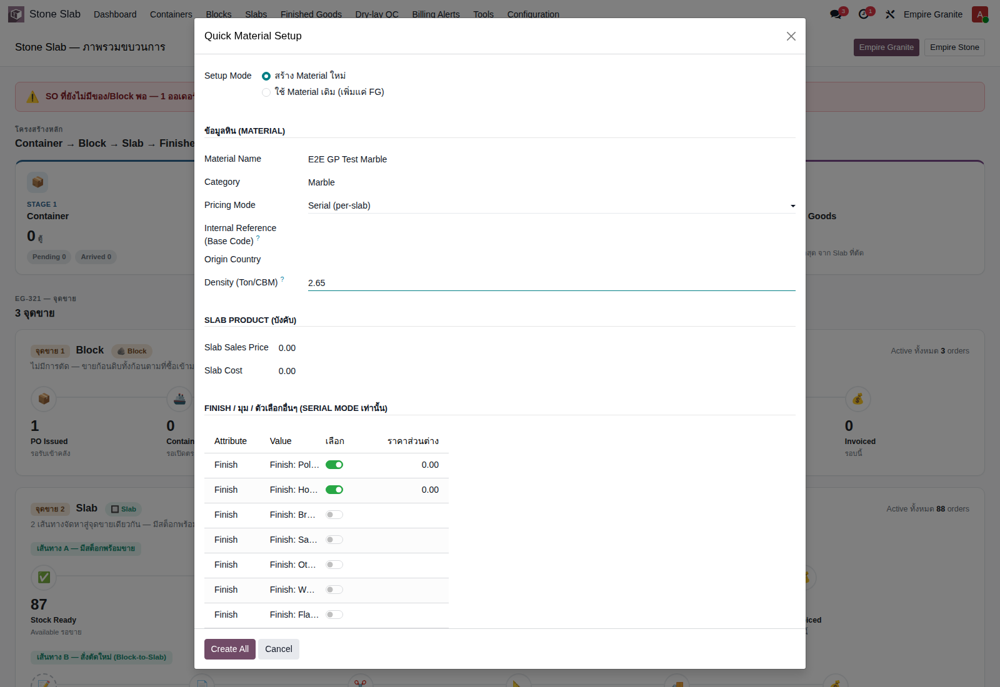 |
| TC-GP-BSF-02 | ติ๊กเพิ่ม Finish/Thickness นอกเหนือจากค่ามาตรฐาน ถ้า Material นี้ต้องการตัวเลือกที่ไม่ใช่ค่ามาตรฐาน (เช่น Brushed, 5cm) แค่ติ๊กเพิ่มในหน้าเดียวกัน ไม่ต้องไปตั้งค่าที่อื่น |
ทำ TC-GP-BSF-01 เสร็จแล้ว |
|
ติ๊กเพิ่ม: Finish = Brushed, Thickness = 5 cm | ค่าที่ติ๊กเพิ่มแสดงเป็นเลือกแล้ว (สีเขียว) อยู่ร่วมกับค่ามาตรฐานที่ติ๊กไว้ก่อนหน้า | Medium | 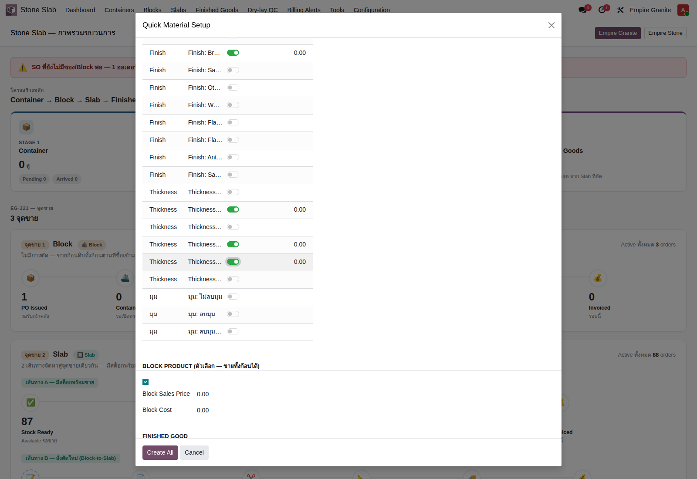 |
| TC-GP-BSF-03 | กด "Create All" สร้าง Material พร้อม Slab/Block Product ทุก Variant | ทำ TC-GP-BSF-02 เสร็จแล้ว |
|
- | ได้ Material ใหม่พร้อม Slab Product ที่มี Variant ครบทุกค่าที่เลือก (มาตรฐาน + ที่เพิ่มเอง) รหัสสินค้าไม่ชนกัน — ตัวอย่างจริง: "E2E GP Test Marble" ได้ 9 variant (Polished/Honed/Brushed × 2cm/3cm/5cm) พร้อม Block Product เชื่อมให้แล้ว | High | 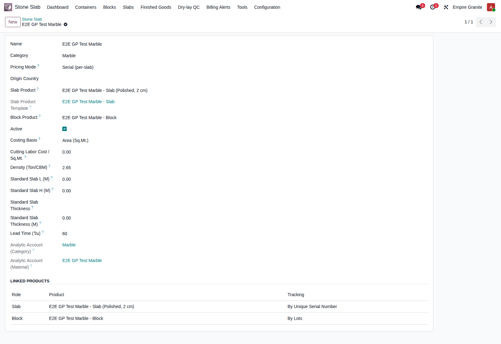 |
S2. ตั้งราคาต่างกันตาม Finish/Thickness (Setup)
ฝั่งแอดมิน — ปรับราคาส่วนต่างแยกตามค่า Finish/Thickness ให้สินค้าที่มีอยู่แล้ว · 1 test case
| TC ID | Scenario | Precondition | Steps | ข้อมูลตัวอย่าง | Expected Result | Priority | ภาพหน้าจอ |
|---|---|---|---|---|---|---|---|
| TC-GP-BSF-04 | เปิดหน้า Product Variant Values ของ Slab Product ปรับราคาส่วนต่างตาม Finish | มี Material ที่มี Finish/Thickness มากกว่า 1 ค่าแล้ว (เช่น จาก S1) |
|
Honed Extra Price = -800 บาท (ถูกกว่า Polished) Brushed Extra Price = +500 บาท (แพงกว่า Polished) |
ราคาขายจริงของแต่ละ Variant คำนวณใหม่ถูกต้องทันที — ตัวอย่างจริง: Polished 9,000 (ฐาน), Honed 8,200, Brushed 9,500 บาท (ทุก Thickness ในกลุ่มเดียวกัน) | Medium | 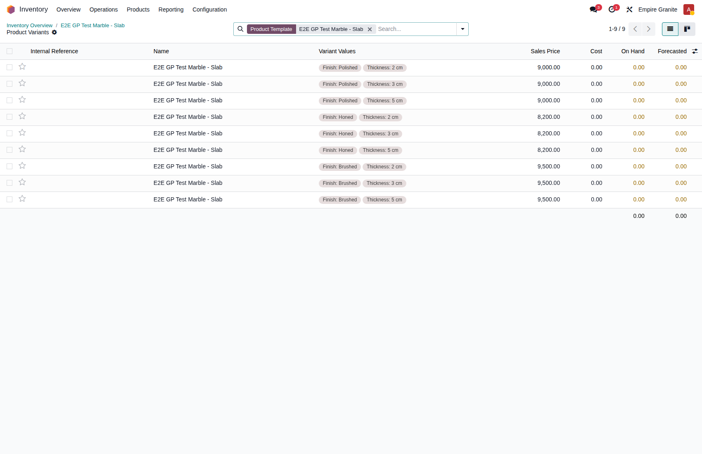 |
G1. จัดซื้อ + รับ Block เข้าคลัง (ADR-071)
Block กรอกแค่ กว้าง×ยาว×สูง ระบบคำนวณ CBM/น้ำหนักให้อัตโนมัติ ไม่ต้องคีย์เอง · 3 test cases
| TC ID | Scenario | Precondition | Steps | ข้อมูลตัวอย่าง | Expected Result | Priority | ภาพหน้าจอ |
|---|---|---|---|---|---|---|---|
| TC-GP-BSF-05 | สร้าง Purchase Order สั่งซื้อ Block จาก Supplier แล้ว Confirm | มี Material ที่ตั้งค่า Block Product ไว้แล้ว (เช่น ดำซานซี/ABSOLUTE BLACK) |
|
Vendor = EMG-test สินค้า = ดำซานซี/ABSOLUTE BLACK - Block Quantity = 2.40 (คิว) |
PO ยืนยันสำเร็จ ระบบคำนวณ Qty(Ton)/Price-per-Ton ให้อัตโนมัติจากความหนาแน่นของ Material — ตัวอย่างจริง: P00133, ยอดรวม 46,224.00 บาท (รวม VAT) | High | 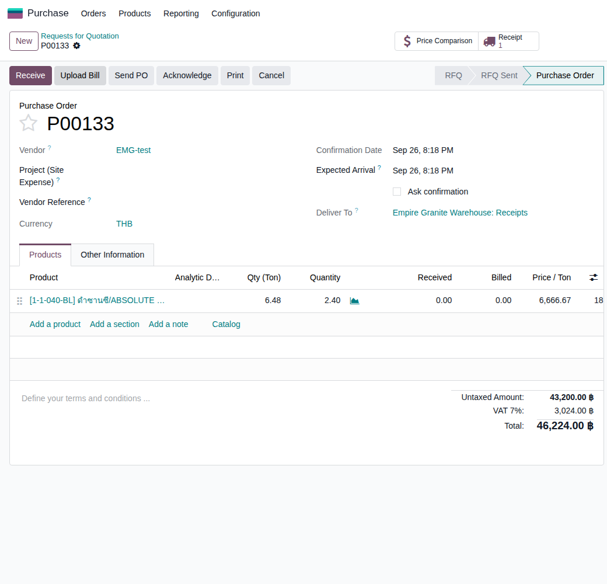 |
| TC-GP-BSF-06 | กดปุ่ม "สร้าง Block" บนบรรทัดของ PO | ทำ TC-GP-BSF-05 เสร็จแล้ว (PO ต้องอยู่สถานะ Confirmed) |
|
- | เปิดฟอร์ม Block ใหม่ทันที โดยกรอก Material/Supplier/Warehouse/Company/Purchase Order Line ให้อัตโนมัติจาก PO — เหลือแค่กรอกขนาดจริง | High | 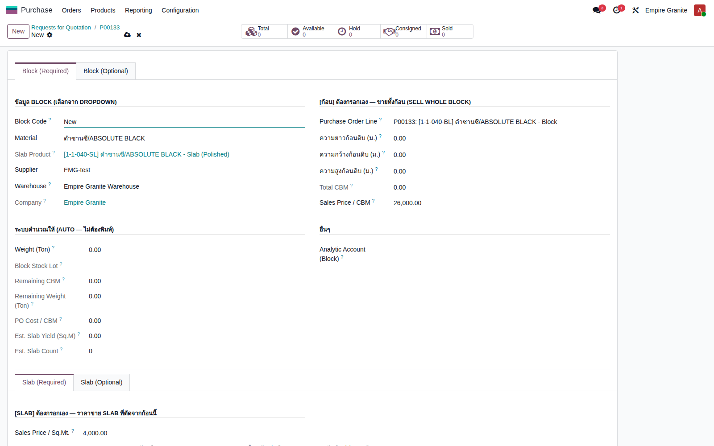 |
| TC-GP-BSF-07 | กรอกขนาดก้อนจริง (กว้าง×ยาว×สูง) แล้ว Save — ระบบคำนวณ CBM/น้ำหนักให้อัตโนมัติ ✨ ADR-071: Block ไม่มีช่อง Thickness/Finish อีกต่อไป — กรอกแค่ 3 มิติ ระบบคำนวณ Total CBM (=กว้าง×ยาว×สูง) และ Weight (Ton) (=CBM×ความหนาแน่น) ให้เองทั้งคู่ ไม่ต้องคีย์เลย |
ทำ TC-GP-BSF-06 เสร็จแล้ว |
|
ความยาว = 2.00 ม. ความกว้าง = 1.00 ม. ความสูง = 1.20 ม. |
Total CBM และ Weight (Ton) ขึ้นให้อัตโนมัติ ไม่ต้องพิมพ์เอง — ตัวอย่างจริง: BLK-26-0266, Total CBM = 2.40, Weight (Ton) = 6.48 (2.40 × 2.7) | High | 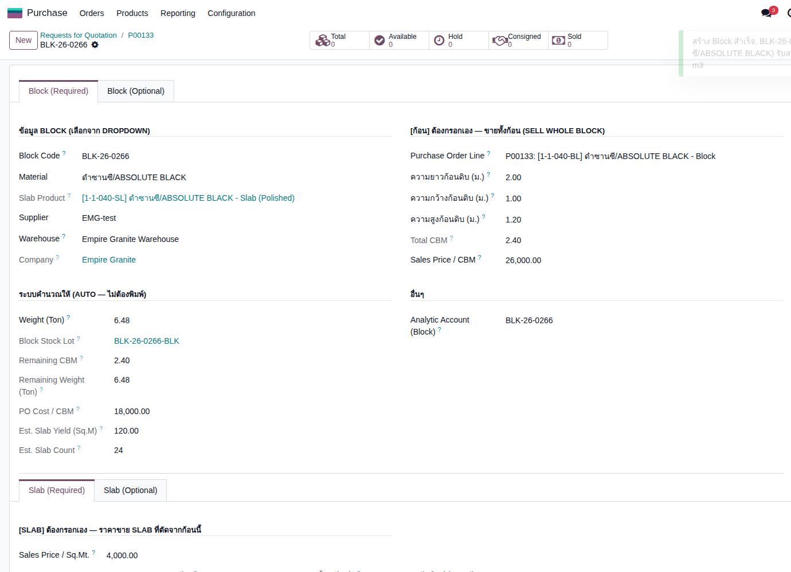 |
G2. ขาย — เลือก Finish/Thickness ตอนสร้าง Sale Order (ADR-072)
Finish/Thickness เป็นของแต่ละ Slab ไม่ใช่ของ Block อีกต่อไป ราคาต่างกันได้จริงตามที่เลือก · 3 test cases
| TC ID | Scenario | Precondition | Steps | ข้อมูลตัวอย่าง | Expected Result | Priority | ภาพหน้าจอ |
|---|---|---|---|---|---|---|---|
| TC-GP-BSF-08 | สร้าง Sale Order เพิ่มสินค้าหิน — ระบบเปิดหน้าต่างให้เลือก Finish/Thickness | มีลูกค้าและสินค้าหิน (FG) ที่ผูกกับ Material พร้อมแล้ว |
|
ลูกค้า = QA-A B2C Test User สินค้า = ดำซานซี/ABSOLUTE BLACK |
หน้าต่าง "Configure your product" เปิดขึ้นให้เลือก Finish (Polished/Honed) และ Thickness (2cm/3cm) พร้อมราคารวมที่อัปเดตตามที่เลือกทันที | High | 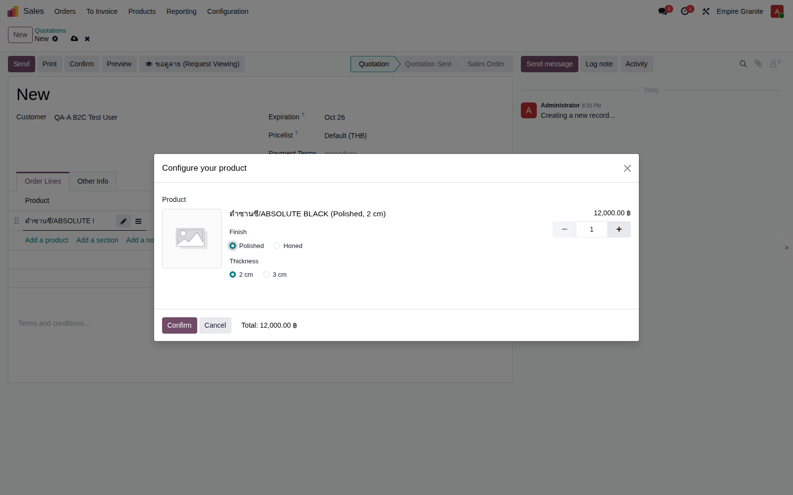 |
| TC-GP-BSF-09 | ยืนยัน Finish/Thickness ที่ต้องการ — ราคาต่างกันจริงตามตัวเลือก ตั้งราคาต่างกันตาม Finish/Thickness ผ่าน price_extra ของแต่ละค่า (native Odoo variant pricing, ตั้งค่าไว้ที่ S2) — หน้าต่างเลือกโชว์ป้ายราคาส่วนต่างให้เห็นเลยว่าเลือกแล้วแพง/ถูกลงเท่าไร |
เปิดหน้าต่าง Configure your product จาก TC-GP-BSF-08 แล้ว |
|
Base (Polished, 2cm) = 12,000 บาท | ราคาต่างกันจริงตามตัวเลือก — ตัวอย่างจริง: Polished/2cm=12,000, Honed/2cm=11,000 (ป้าย "-1,000"), Polished/3cm=18,000 (ป้าย "+6,000"), Honed/3cm=17,000 บาท | Medium | 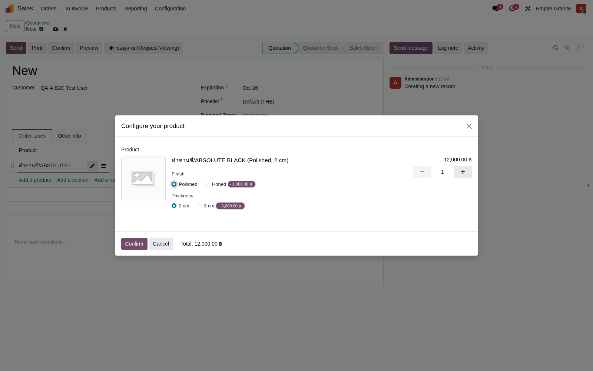 |
| TC-GP-BSF-10 | กด Confirm ยืนยัน Sale Order | ทำ TC-GP-BSF-09 เสร็จแล้ว (มีบรรทัดสินค้าหินพร้อม Finish/Thickness ที่เลือกแล้ว) |
|
- | SO ยืนยันสำเร็จ เปลี่ยนสถานะเป็น Sales Order มีสมาร์ทปุ่ม Delivery ปรากฏ และลิงก์ "Produce FG" บนบรรทัดสินค้า — ตัวอย่างจริง: S00320, ยอดรวม 25,680.00 บาท (รวม VAT) | High | 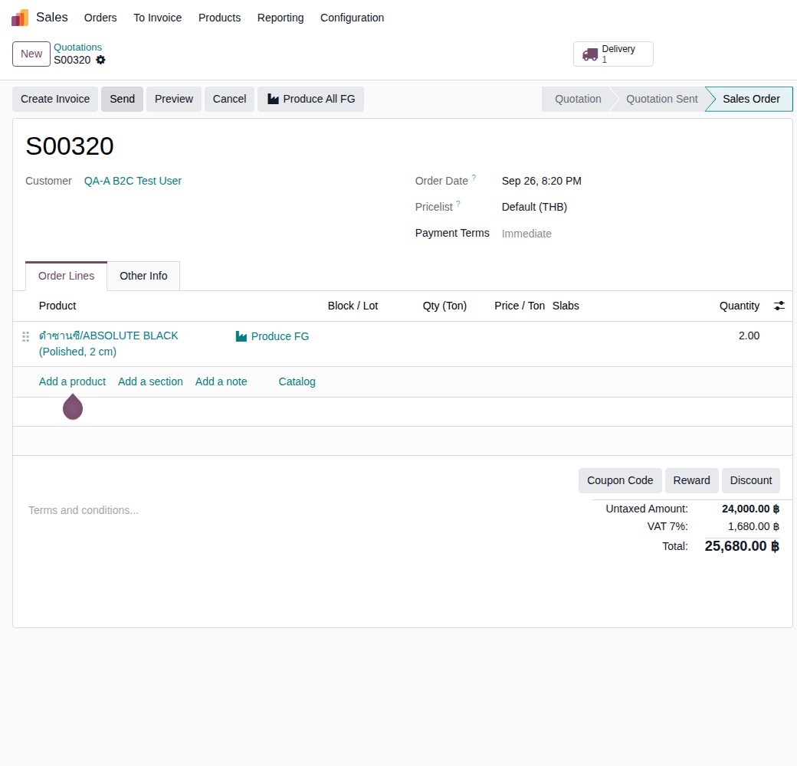 |
G3. ผลิต FG ตาม Spec ที่ลูกค้าสั่ง (ADR-073)
ระบบหา Slab ที่ Finish/Thickness ตรงกับที่ลูกค้าสั่งให้อัตโนมัติ ไม่ต้องเลือกเอง · 4 test cases
| TC ID | Scenario | Precondition | Steps | ข้อมูลตัวอย่าง | Expected Result | Priority | ภาพหน้าจอ |
|---|---|---|---|---|---|---|---|
| TC-GP-BSF-11 | กดลิงก์ "Produce FG" บนบรรทัดสินค้าใน Sale Order ✨ ADR-073: ระบบค้นหา Slab ที่มี Finish/Thickness ตรงกับที่ลูกค้าสั่งให้อัตโนมัติ (ไม่ใช่ Slab ของ Material นั้นแบบสุ่มๆ) — ถ้าลูกค้าเคยเลือก Slab แผ่นใดแผ่นหนึ่งไว้ล่วงหน้าแล้ว ระบบจะเคารพแผ่นนั้นก่อนเสมอ |
ทำ TC-GP-BSF-10 เสร็จแล้ว |
|
- | เปิดหน้า Manufacturing Order ฉบับร่างทันที ช่อง "Slab Consumed (FG)" เติมให้อัตโนมัติเป็นแผ่นที่มี Finish/Thickness ตรงกับที่ลูกค้าสั่ง — ตัวอย่างจริง: MO EG01/STFG/00057, Slab = BLK-26-0265 #3 (Polished, 2cm ตรงกับที่ลูกค้าสั่งเป๊ะ) | High | 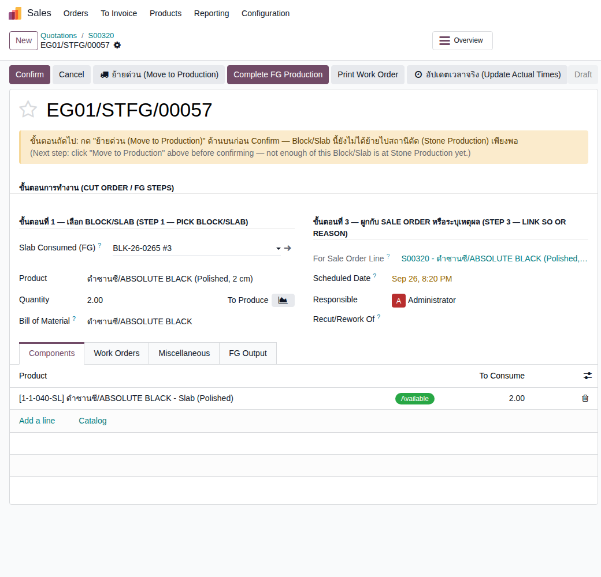 |
| TC-GP-BSF-12 | กด "ย้ายด่วน (Move to Production)" แล้ว Confirm ใบสั่งผลิต | ทำ TC-GP-BSF-11 เสร็จแล้ว |
|
- | Slab ที่ระบบจับคู่ให้ถูกย้ายไปสถานีผลิต (Stone Production) สำเร็จ ไม่มี error เรื่องหาสต็อกไม่เจอ แล้ว Confirm ผ่านทันที สถานะ Component Status ขึ้นเป็น Available | High | 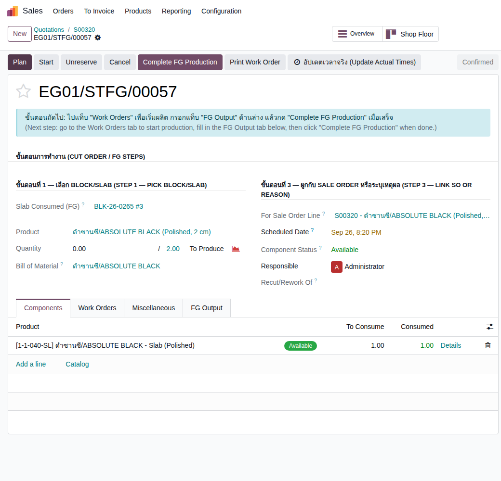 |
| TC-GP-BSF-13 | บันทึกขนาดที่ตัดได้จริงในแท็บ "FG Output" | ทำ TC-GP-BSF-12 เสร็จแล้ว |
|
Width = 1.00 ม. Length = 2.00 ม. Thickness = 0.02 ม. Qty = 2 |
บันทึกแถวผลผลิตจริงสำเร็จ พร้อมให้กด Complete FG Production ต่อได้ | Medium | 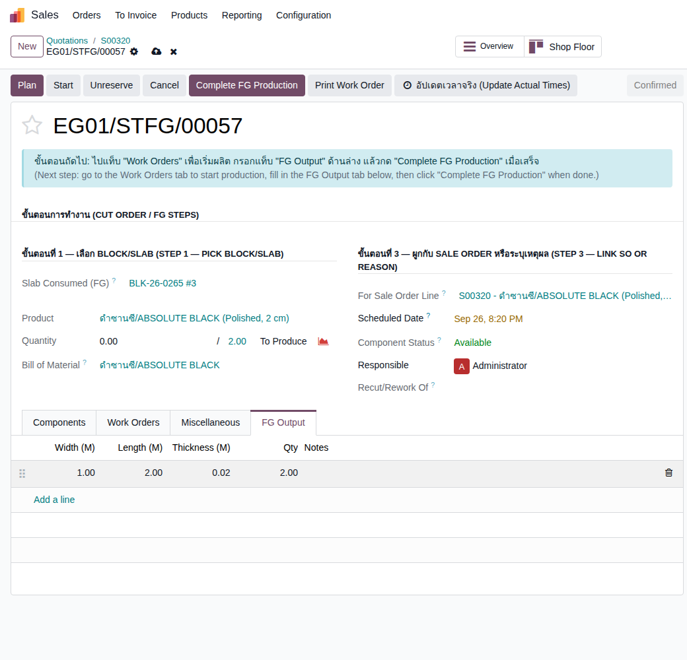 |
| TC-GP-BSF-14 | กด "Complete FG Production" ปิดงานผลิต | ทำ TC-GP-BSF-13 เสร็จแล้ว |
|
- | MO เปลี่ยนสถานะเป็น Done มีข้อความแจ้งผลิตสำเร็จตามจำนวนที่กรอก — ตัวอย่างจริง: "ผลิตสำเร็จ 2.00 หน่วย" | High | 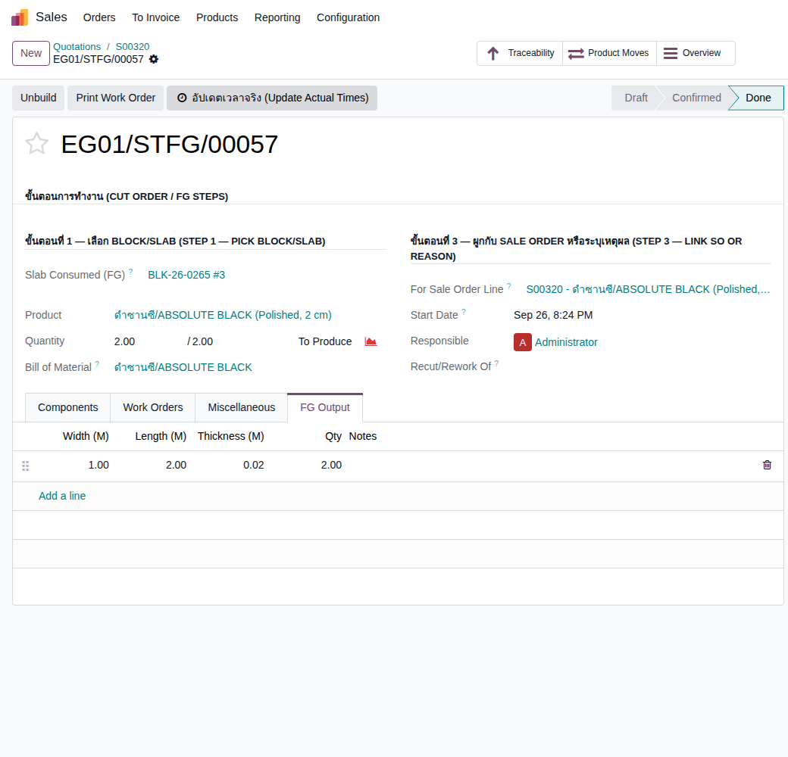 |
G4. ส่งของ + วางบิล
ขั้นตอนมาตรฐานของ Odoo ไม่มีอะไรเปลี่ยนจาก concept เดิม · 2 test cases
| TC ID | Scenario | Precondition | Steps | ข้อมูลตัวอย่าง | Expected Result | Priority | ภาพหน้าจอ |
|---|---|---|---|---|---|---|---|
| TC-GP-BSF-15 | Validate ใบส่งของ (Delivery) | ทำ TC-GP-BSF-14 เสร็จแล้ว |
|
- | ใบส่งของเปลี่ยนสถานะเป็น Done จำนวนที่ส่งตรงกับที่ผลิตได้ — ตัวอย่างจริง: EG01/OUT/00179, 2.00/2.00 | Medium | 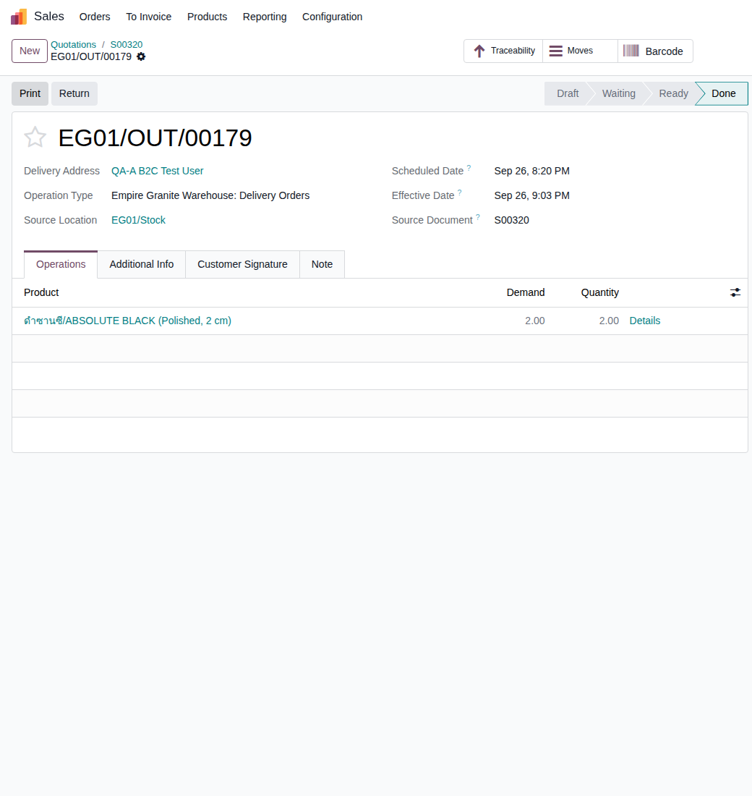 |
| TC-GP-BSF-16 | สร้างและ Post ใบแจ้งหนี้ (Invoice) | ทำ TC-GP-BSF-15 เสร็จแล้ว |
|
- | ใบแจ้งหนี้ Post สำเร็จ ยอดตรงกับ Sale Order — ตัวอย่างจริง: INV/2026/00001, 25,680.00 บาท, ลงบัญชี "411150 Sales Revenue - FG Production" พร้อม Analytic tag ครบ 3 มิติ (Material/Block/หมวดหิน) | High | 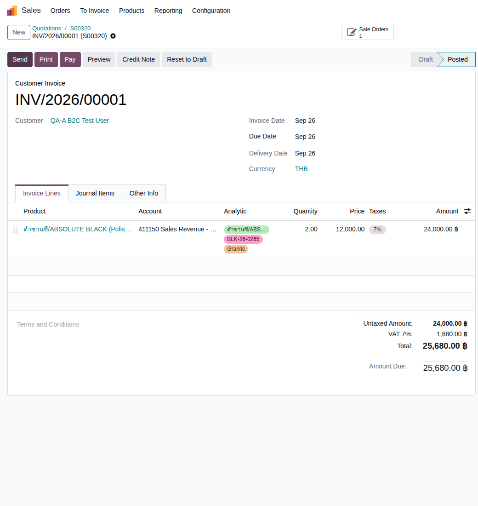 |
M1. โหมดขาย 1 — ขายทั้งก้อน Block (Block Direct Sale)
ไม่มีการตัด Slab เลย ขาย Block ทั้งก้อนตรงๆ ราคาคิดจาก CBM จริง · 3 test cases
| TC ID | Scenario | Precondition | Steps | ข้อมูลตัวอย่าง | Expected Result | Priority | ภาพหน้าจอ |
|---|---|---|---|---|---|---|---|
| TC-GP-BSF-17 | เพิ่มสินค้า Block ลงบรรทัด Sale Order แล้วกด "Sell Whole Block" | มี Block พร้อมขายอยู่แล้ว (ทำตามขั้นตอน G1 ก่อน — ตั้ง Sales Price/CBM ให้ Block ด้วยถ้า Material นี้เพิ่งสร้างใหม่) |
|
สินค้า = E2E GP Test Marble - Block | หน้าต่าง "Select Block" เปิดขึ้นให้เลือก Block ก้อนที่จะขาย | High | 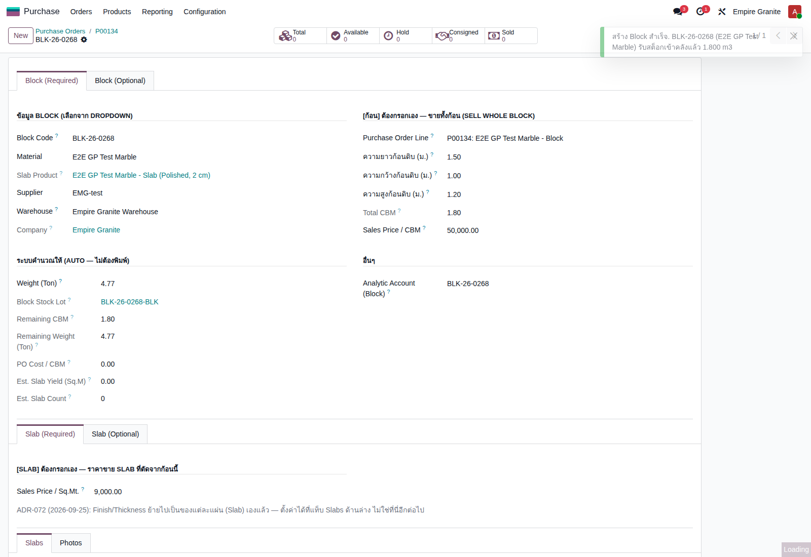 |
| TC-GP-BSF-18 | เลือก Block ที่จะขาย — ราคา/จำนวนคำนวณจาก CBM จริงให้อัตโนมัติ | ทำ TC-GP-BSF-17 เสร็จแล้ว |
|
Block = BLK-26-0268 (คงเหลือ 1.80 คิว) | Quantity เติมเป็น CBM ที่เหลือของ Block ให้อัตโนมัติ ราคารวมคำนวณจาก Sales Price/CBM × CBM — ตัวอย่างจริง: SO S00321, 1.80 × 50,000 = 90,000 บาท (ก่อน VAT) ยืนยันสำเร็จที่ 96,300.00 บาท | High | 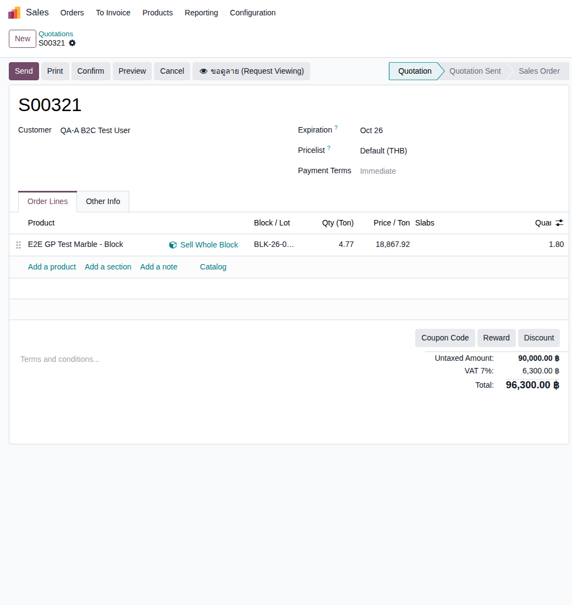 |
| TC-GP-BSF-19 | ส่งของ + วางบิล (กลไกเดียวกับ G4) | ทำ TC-GP-BSF-18 เสร็จแล้ว |
|
- | ส่งของและวางบิลสำเร็จเหมือน G4 ทุกประการ — ตัวอย่างจริง: Invoice INV/2026/00002, 96,300.00 บาท, ลงบัญชี "411110 Sales Revenue - Block" | Medium |
M2. โหมดขาย 2 — ขาย Slab ที่มีสต็อกพร้อมขายอยู่แล้ว (Ready-Made Slab)
ADR-072 domain fix — กรองเฉพาะ Slab ที่ Finish/Thickness ตรงกับที่ลูกค้าสั่งเท่านั้น (รันจริงครั้งแรกหลังแก้โค้ด) · 3 test cases
| TC ID | Scenario | Precondition | Steps | ข้อมูลตัวอย่าง | Expected Result | Priority | ภาพหน้าจอ |
|---|---|---|---|---|---|---|---|
| TC-GP-BSF-20 | เพิ่มสินค้า Slab (ระบุ Finish/Thickness) ลง Sale Order แล้วกด "Select Slabs" | มี Slab พร้อมขายอยู่แล้วในสต็อก (Finish/Thickness ตรงกับที่จะเลือกขาย) |
|
สินค้า = ดำซานซี/ABSOLUTE BLACK - Slab (Polished) | รายการ Slab ที่แสดงกรองเฉพาะแผ่นที่ Finish/Thickness ตรงกับสินค้าที่เลือกและสถานะ Available เท่านั้น ไม่ปนแผ่นอื่น — ตัวอย่างจริง: เจอ 80 แผ่น Polished/2cm ที่พร้อมขาย | High | 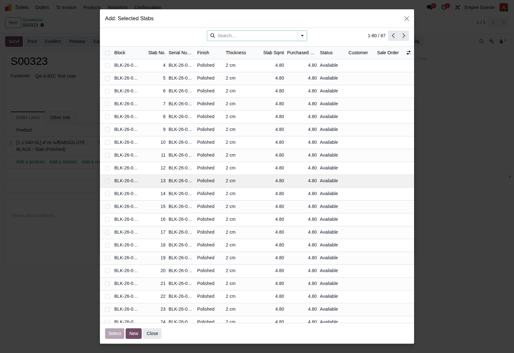 |
| TC-GP-BSF-21 | เลือกแผ่นที่ต้องการ กด Confirm Selection แล้ว Confirm Sale Order | ทำ TC-GP-BSF-20 เสร็จแล้ว |
|
เลือก 3 แผ่น (BLK-26-0265 #4, #5, #6) | Quantity/ราคาบนบรรทัดอัปเดตอัตโนมัติตามจำนวนแผ่นที่เลือกจริง แผ่นที่เลือกเปลี่ยนสถานะเป็น Hold ทันที — ตัวอย่างจริง: SO S00323 ยืนยันที่ 61,632.00 บาท | High | 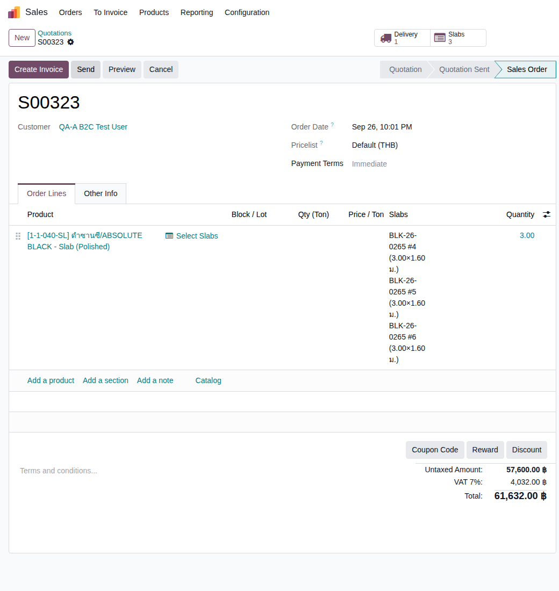 |
| TC-GP-BSF-22 | ส่งของ + วางบิล การส่งของ Slab ต้องกรอก "Scanned Serial" ให้ตรงกับ Serial จริงของแต่ละแผ่นก่อน Validate ได้ (ป้องกันส่งผิดแผ่น) — คลิก "Details" บนบรรทัดสินค้าเพื่อกรอก |
ทำ TC-GP-BSF-21 เสร็จแล้ว |
|
- | ส่งของและวางบิลสำเร็จ — ตัวอย่างจริง: Invoice INV/2026/00003, 61,632.00 บาท | Medium | 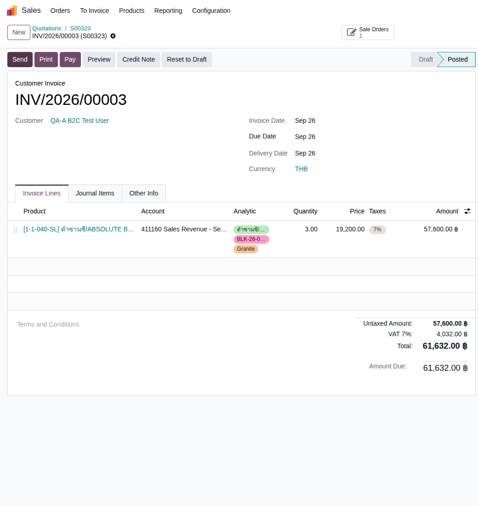 |
M3. โหมดขาย 3 — ขายแบบ BOQ/Project (Sold-as-Project)
กลไก BOQ→Project ไม่ถูกกระทบจาก ADR-071/072/073 เลย (โค้ดไม่แตะ Finish/Thickness) · 2 test cases
| TC ID | Scenario | Precondition | Steps | ข้อมูลตัวอย่าง | Expected Result | Priority | ภาพหน้าจอ |
|---|---|---|---|---|---|---|---|
| TC-GP-BSF-23 | สร้าง BOQ Document ใส่รายการที่ผูกกับสินค้าหินจริง แล้วสร้างใบเสนอราคา | มี Rate Library Item ที่ผูกกับสินค้าหิน (Finish/Thickness) ที่ต้องการแล้ว |
|
Rate = [GP-TEST-01] Countertop Slab (9,000/หน่วย) Quantity = 2 |
ได้ Sale Order ใหม่ที่มีบรรทัดสินค้าจริงตรงกับ Rate ที่เลือก บวก Overhead & Profit อัตโนมัติ — ตัวอย่างจริง: BOQ0041 (18,000 + 1,800 = 19,800) → SO S00324 | High | 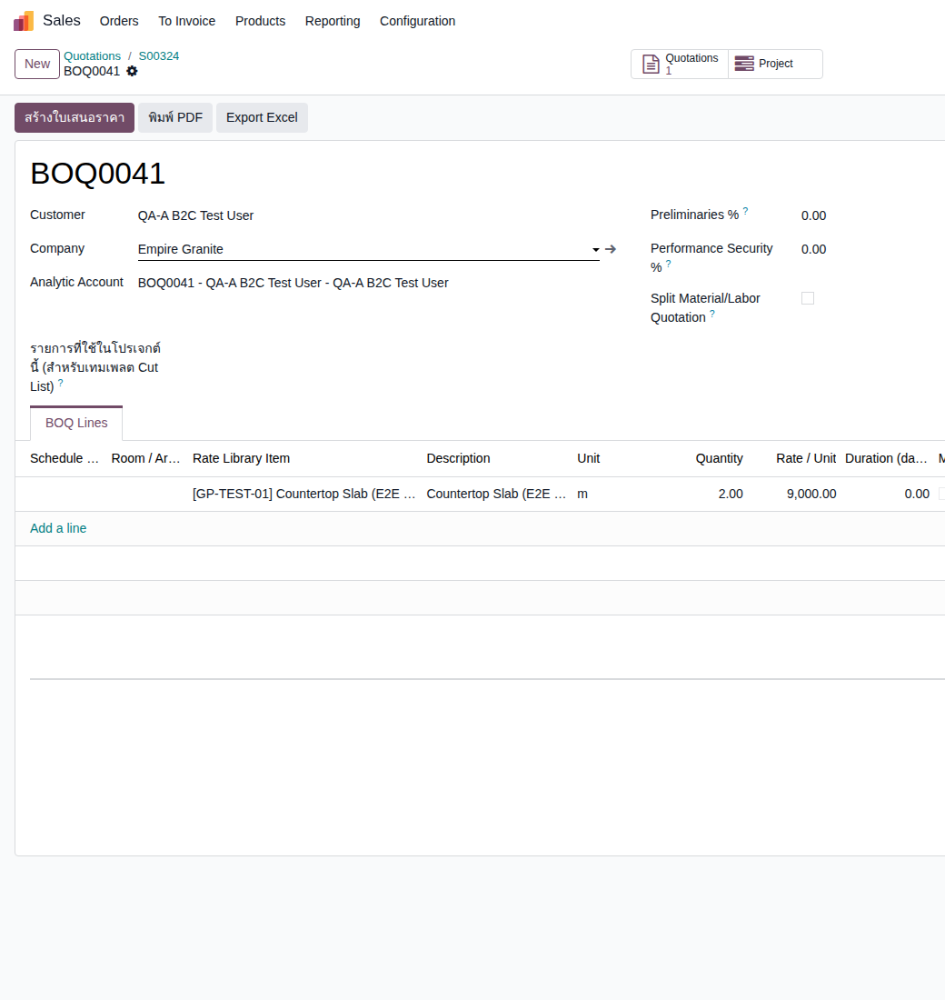 |
| TC-GP-BSF-24 | ติ๊ก "Sold as Project" แล้ว Confirm — ระบบสร้าง Project + Task ให้อัตโนมัติ | ทำ TC-GP-BSF-23 เสร็จแล้ว |
|
- | SO ยืนยันสำเร็จ มี Project ใหม่เชื่อมให้อัตโนมัติ พร้อม Task 1 รายการต่อ 1 บรรทัดสินค้า — ตัวอย่างจริง: Project "QA-A B2C Test User - S00324" พร้อม 2 Tasks (บรรทัดสินค้าจริง + Overhead) | High | 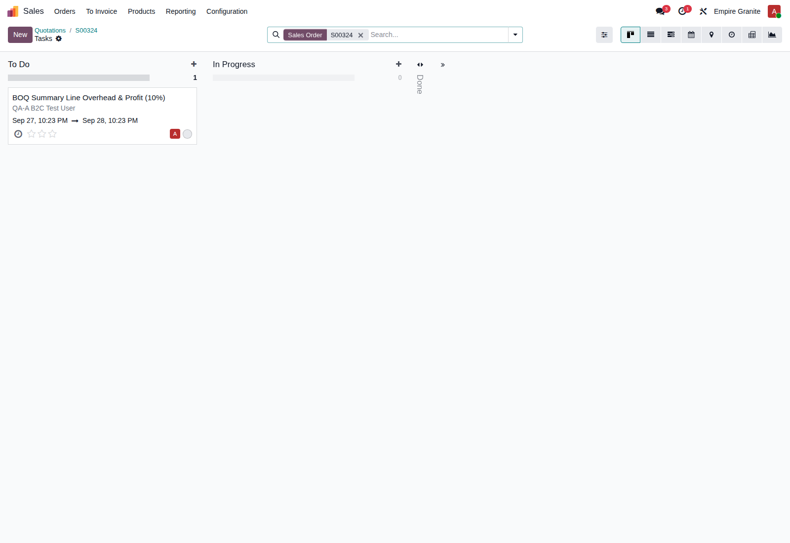 |